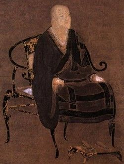

Who Was Dōgen?
Dōgen (1200–1253), also known as Dōgen Zenji, was a Japanese Buddhist teacher, writer, and philosopher who became one of the most influential figures in the history of Japanese Zen Buddhism. He is traditionally regarded as the founder of the Japanese Sōtō Zen school, although his teachings developed within the wider traditions of Mahāyāna Buddhism and Chinese Chan Buddhism.
Dōgen's thought developed around zazen, or seated Zen meditation, and the fundamental relationship between Buddhist practice and awakening. Rather than treating meditation merely as a technique through which a person eventually obtains enlightenment, Dōgen argued that genuine practice and realization cannot ultimately be separated. Practice itself is an expression of awakening rather than simply a preliminary step toward it.
His understanding of Zen therefore extended beyond meditation as an isolated activity. Dōgen explored how awakening could be expressed through the whole of human life, including ethical conduct, ritual, work, study, and ordinary daily activities. His philosophy repeatedly challenges simple distinctions between means and ends, practice and enlightenment, body and mind, and religious discipline and everyday existence.
Dōgen is best known for the Shōbōgenzō, usually translated as Treasury of the True Dharma Eye, a collection of writings that explores subjects including Buddha-nature, impermanence, time, language, ethical conduct, meditation, and the nature of awakening. These often complex writings combine Buddhist doctrine, philosophical reflection, literary expression, and interpretations of earlier Buddhist and Zen traditions.
Although Dōgen lived in thirteenth-century Japan, his thought has continued to attract attention far beyond the Sōtō tradition. Modern scholars and philosophers have studied his ideas about time, existence, selfhood, language, and embodied practice, while Buddhist practitioners continue to regard his teachings as an important expression of Zen. Today, Dōgen remains one of the most significant figures in Japanese intellectual and religious history.
Dōgen Zenji: Quick Facts
- Name — Dōgen Zenji
- Born — 1200
- Died — 1253
- From — Japan
- Tradition — Zen Buddhism
- School — Sōtō Zen
- Known for — Zen philosophy, meditation, practice- realization, Buddha-nature, impermanence, and teachings on time
- Major work — Shōbōgenzō
- Meditation practice — Shikantaza, often translated as "just sitting"
- Important teacher in China — Tiantong Rujing
- Major temple associated with Dōgen — Eiheiji
Dōgen and the Development of Zen Buddhism in Japan

Dōgen lived during Japan's Kamakura period, an era of major political, social, and religious change. Buddhism had been established in Japan for centuries, but older institutions such as the Tendai school existed alongside newer movements and changing forms of Buddhist practice. Zen was also becoming increasingly important, particularly through connections with the Buddhist traditions of Song-dynasty China.
Dōgen entered Buddhist monastic training while still young and studied within the Tendai tradition associated with Mount Hiei. Traditional accounts connect his early intellectual development with a question concerning Buddha-nature: if all beings are originally endowed with Buddha-nature, why are Buddhist practice and the search for awakening necessary? This problem became an important background to his later reflections on practice and realization.
His early education did not take place in isolation from the wider Buddhist world. After his training in the Tendai tradition, Dōgen also studied Zen under Myōzen, a disciple in the lineage associated with the earlier Japanese Zen teacher Eisai. These experiences introduced him more directly to the developing Zen traditions that were drawing inspiration from Chinese Chan Buddhism.
Seeking a deeper understanding of Buddhist practice and Zen transmission, Dōgen eventually traveled to China in 1223. His years there, especially his encounter with the Chan teacher Tiantong Rujing, became decisive for his later teaching. After returning to Japan in 1227, Dōgen developed a distinctive Buddhist community whose emphasis on zazen, monastic discipline, and practice would profoundly shape the history of Japanese Sōtō Zen.
Why Did Dōgen Travel to China?
Dōgen traveled to Song-dynasty China in 1223 with his teacher Myōzen. For Japanese Buddhist monks of this period, China remained an important source of religious learning and authoritative Buddhist lineages. Dōgen's journey gave him the opportunity to visit major monasteries, encounter established Chan communities, and study forms of practice that were not identical with those available in Japan.
During his travels, Dōgen encountered several Chan teachers and monasteries, but he did not immediately find the instruction he was seeking. In 1225 he went to Tiantong Mountain, where he became closely associated with the Chan master Tiantong Rujing. Rujing belonged to the Caodong lineage of Chinese Chan, the tradition from which the Japanese Sōtō lineage takes its name.
Later accounts and Dōgen's own writings present his relationship with Rujing as deeply important to his understanding of Buddhist practice. A teaching associated with Rujing concerning the "dropping off of body and mind" became especially significant in Dōgen's later thought. His experience in China therefore influenced not only his institutional lineage but also his philosophical language about awakening and embodied practice.
Dōgen returned to Japan in 1227 after receiving recognition within Rujing's lineage. He began teaching zazen and writing works concerned with Buddhist practice, including the Fukanzazengi. His later community did not simply reproduce Chinese Chan in Japan; Dōgen developed his own interpretation of Buddhist teaching, expressed through Japanese-language writings, monastic regulations, and a distinctive understanding of practice and realization.
Dōgen and Sōtō Zen
Dōgen is closely associated with the establishment and development of Sōtō Zen in Japan. The Japanese Sōtō tradition traces an important part of its lineage to the Chinese Caodong school of Chan Buddhism, and Dōgen's training under Rujing gave his community a recognized connection with that tradition. For this reason, Dōgen is commonly regarded as the founder or principal transmitter of Sōtō Zen in Japan.
Sōtō Zen is strongly associated with seated meditation, disciplined monastic practice, ritual, study, and the embodiment of Buddhist teaching in ordinary activity. Dōgen gave particular importance to zazen, but his understanding of Buddhist life extended far beyond the time spent sitting in meditation. Eating, working, studying, living within a community, and following monastic forms could all become expressions of the Buddhist path.
Dōgen therefore did not present Zen as merely an intellectual philosophy that could be understood independently of practice. Buddhist teachings required interpretation and study, but realization also depended upon disciplined participation in the forms of life through which the teaching was enacted. This close relationship between doctrine and practice became one of the defining characteristics of his approach.
His interpretation of Zen became influential through his writings and through the communities associated with his teaching. After his death, later teachers played an important role in expanding the Sōtō tradition throughout Japan, so the school's later historical development cannot be attributed to Dōgen alone. Nevertheless, his writings and his model of monastic practice remained foundational points of reference within the tradition.
What Is Shikantaza in Dōgen's Zen Philosophy?

Shikantaza is commonly translated as "just sitting." The term became strongly associated with the Japanese Sōtō Zen tradition and is widely used to describe a form of seated meditation in which practice is not directed toward acquiring an external object or achieving a particular worldly result. The expression must, however, be understood within the broader Buddhist context of Dōgen's teaching rather than as a simple instruction to sit without discipline.
Dōgen gave central importance to zazen, or seated meditation. In texts such as the Fukanzazengi, he provided practical guidance concerning posture and the circumstances of sitting. Yet his understanding of meditation was not limited to physical technique or the production of a particular psychological state. Zazen belonged to a larger Buddhist discipline concerned with awakening, wisdom, and the transformation of how existence is understood.
Shikantaza is therefore often explained in relation to Dōgen's understanding of practice and realization. Sitting is not merely a preliminary exercise undertaken by an unenlightened person in order to obtain enlightenment at some distant future moment. Genuine Buddhist practice already participates in and expresses the reality toward which the practitioner is directed.
This does not mean that Dōgen regarded practice as unnecessary because awakening is already present. On the contrary, his writings repeatedly emphasize sustained discipline and training. The apparent opposition between "already awakened" and "still practicing" is precisely the kind of simple division that his account of practice-realization calls into question. Practice continues to matter because realization is lived and expressed through practice itself.
What Did Dōgen Teach About Practice and Enlightenment?
One of the central ideas in Dōgen's thought concerns the relationship between practice and realization. Ordinary thinking often treats practice as a means and enlightenment as an end: first a person practices for many years, and only afterward reaches a separate state called awakening. Dōgen repeatedly challenged this simple chronological and conceptual separation.
In his understanding of Zen, Buddhist practice is not simply a tool used to manufacture enlightenment in the future. Authentic practice already expresses the Buddha's teaching and therefore cannot be completely separated from realization. This is why Dōgen gave such importance to the actual activity of practice rather than presenting enlightenment merely as an extraordinary experience to be possessed by an individual.
This relationship is often described as practice-realization. The expression does not mean that practice and realization are two completely identical things in every ordinary sense. Rather, it challenges the assumption that they can be treated as entirely independent stages, with one existing only before the other begins. Practice is itself a manifestation of the Buddhist realization toward which it is directed.
Dōgen's position also explains his emphasis on continuing practice. Awakening is not simply a final possession after which discipline has no further significance. Buddhist realization must be enacted through the body, through conduct, meditation, study, and life within a community. In this sense, the question is not merely how to "get" enlightenment, but how awakening is continuously expressed in the concrete activity of living and practicing.
Dōgen's Philosophy of Buddha-Nature
Buddha-nature is an important concept in Mahāyāna Buddhism and plays a major role in Dōgen's writings. In broad terms, teachings about Buddha-nature concern the relationship between living beings and Buddhahood. Different Buddhist traditions have interpreted the concept in different ways, and Dōgen's treatment is particularly important because it resists reducing Buddha-nature to a simple, permanent substance possessed by an individual.
In the Busshō, or "Buddha-Nature," fascicle of the Shōbōgenzō, Dōgen engages closely with Buddhist scriptures and earlier Zen interpretations. His language sometimes challenges the familiar statement that sentient beings merely "have" Buddha-nature. The difficulty lies partly in the implications of the verb "to have," which can suggest that Buddha-nature is an object or hidden property existing separately inside a person.
Dōgen instead develops ways of speaking that connect Buddha-nature with the reality of existence itself. His interpretation is closely related to impermanence and to the Buddhist understanding that things do not possess an independent, unchanging essence. Buddha-nature therefore cannot be adequately understood as a permanent soul or metaphysical substance concealed beneath changing experience.
This interpretation has important consequences for practice. If Buddha-nature is misunderstood as a finished possession that requires nothing further, Buddhist discipline can appear unnecessary. Dōgen's teaching instead connects Buddha-nature with active practice and realization. The question is not simply whether an individual possesses a hidden inner essence, but how the Buddha Way is realized through the changing conditions and activities of existence.
Dōgen on Impermanence and the Nature of Reality
Impermanence is one of the fundamental teachings of Buddhism, and it plays an important role throughout Dōgen's thought. Buddhist teaching generally emphasizes that conditioned things arise, change, and pass away rather than remaining permanently fixed. Dōgen develops this insight in ways that connect impermanence not only with loss or transience but also with the very character of existence.
Dōgen does not treat impermanence merely as the unfortunate fact that things eventually disappear. Change is not simply something that happens to an otherwise permanent reality. His writings repeatedly question the assumption that there must be a fixed substance standing behind the changing forms through which life is experienced.
This perspective is closely connected with Buddhist practice. A person who clings to a permanent and independent self, object, or state of enlightenment misunderstands the conditioned nature of existence. Attention to impermanence therefore has both philosophical and practical significance: it changes how the practitioner understands identity, attachment, change, and the possibility of awakening.
Dōgen's treatment of impermanence also prevents Buddhist philosophy from becoming a search for an eternal substance hidden behind the changing world. The changing character of reality is not merely an obstacle to spiritual truth that must somehow be escaped. Instead, the Buddhist path takes place within this changing reality, where practice and realization themselves occur through concrete and impermanent forms of existence.
Dōgen's Philosophy of Being-Time: What Is Uji?
Uji is one of the best-known philosophical concepts associated with Dōgen. The Japanese term is often translated as "being-time" or "time-being," although no English translation captures every implication of the original expression. Dōgen discusses the idea in a famous fascicle of the Shōbōgenzō, where questions about existence and temporality are treated as inseparable.
In ordinary thinking, time can appear to be an empty container through which independently existing things move. A person exists first, it may seem, and then passes through a sequence called past, present, and future. Dōgen challenges this way of separating being from time and asks readers to reconsider what it means for anything to exist temporally.
His discussion connects existence and time so closely that being cannot simply be imagined as something standing outside temporality. Each form of existence is a temporal occurrence, and time is not merely an external measure applied to an independently completed reality. This makes uji relevant to philosophical questions about change, identity, continuity, and the meaning of existence.
Dōgen's account is difficult and has received different interpretations from translators and philosophers. It should therefore not be reduced to the simple slogan that "everything is time." What makes uji philosophically significant is Dōgen's attempt to transform ordinary assumptions about how things exist through time and how the temporal character of existence is related to Buddhist realization.
Dōgen's Genjōkōan and the Nature of Zen Practice
Genjōkōan is one of Dōgen's best-known writings and is traditionally included as an important fascicle of the Shōbōgenzō. The title is difficult to translate precisely, and interpretations vary, but the text is widely regarded as a central statement of Dōgen's early thought about Buddhist practice, realization, selfhood, and the nature of experience.
The text explores questions concerning practice, enlightenment, perception, self, and other beings. Rather than presenting these subjects as parts of a formal philosophical system, Dōgen develops them through compressed arguments, metaphors, paradoxical statements, and references to Buddhist teaching. The result is a work in which philosophical reflection and spiritual instruction are closely joined.
One of its most famous passages begins by connecting the study of the Buddha Way with the study of the self and then with the forgetting of the self. The movement is important because Dōgen does not treat self-understanding as the discovery of a permanent inner essence. Buddhist practice transforms the way the distinction between self and the wider world is ordinarily experienced.
Genjōkōan therefore illustrates a central feature of Dōgen's thought: philosophical questions are not detached from practice. Questions about what the self is, how things are known, or what awakening means are explored through the practical discipline of the Buddha Way. For Dōgen, understanding is inseparable from the forms of life through which that understanding is enacted.
What Is Dōgen's Shōbōgenzō?
The Shōbōgenzō is Dōgen's most famous collection of writings. Its title is commonly translated as "Treasury of the True Dharma Eye," although variations in translation are possible. Written across different periods of Dōgen's life, the collection contains numerous fascicles rather than functioning as a single philosophical treatise written according to one systematic plan.
The work addresses an exceptionally wide range of Buddhist and philosophical subjects. These include practice, enlightenment, Buddha-nature, impermanence, time, language, ethics, meditation, and the interpretation of Buddhist teachings. Dōgen frequently develops his arguments through close engagement with Buddhist scriptures, sayings of earlier teachers, linguistic interpretation, and examples drawn from religious practice.
The Shōbōgenzō is particularly important because Dōgen often brings philosophical reflection and practical instruction together. He does not consistently separate metaphysical questions from meditation, or linguistic analysis from religious discipline. A discussion of time, for example, may simultaneously concern existence, Buddhist realization, and the way ordinary assumptions shape human understanding.
The collection is also difficult to interpret because its language is often deliberately complex and because its textual history involves different editions and arrangements of fascicles. Modern translations and scholarly interpretations sometimes disagree about important passages. Nevertheless, the Shōbōgenzō remains one of the most significant works in Japanese Buddhist intellectual history and an important text for the philosophical study of Zen.
Important Themes in the Shōbōgenzō
- Practice and realization
- Buddha-nature
- Impermanence
- Being-time
- Zen meditation
- Ethical and monastic practice
- Language and Buddhist teaching
- The relationship between self and world
Dōgen's Main Philosophical Ideas
Dōgen's writings contain a wide range of Buddhist and philosophical ideas that cannot easily be reduced to a short set of doctrines. Nevertheless, several recurring themes provide a useful introduction to his thought. These themes are closely connected: his understanding of meditation influences his account of enlightenment, while his reflections on time and impermanence affect how existence itself is understood.
Practice and Realization Are One
Dōgen challenged the simple idea that practice is only a means used to reach enlightenment at some later time. Authentic Buddhist practice is inseparable from realization because the practice of the Buddha Way already expresses the reality toward which it is directed. This does not eliminate the need for training; instead, it gives continued practice a deeper significance.
Shikantaza and Zen Meditation
Seated meditation occupies a central place in Dōgen's approach to Zen. Shikantaza, often translated as "just sitting," is commonly associated with his teaching, although his understanding of zazen belongs within a broader Buddhist discipline. Meditation is not merely a technique for producing a special state of consciousness but a concrete expression of practice and realization.
Impermanence
Impermanence is not merely an unfortunate feature of life in Dōgen's thought. Change challenges the assumption that reality must be founded upon permanent and independent substances. Buddhist practice therefore requires attention to the conditioned and changing character of existence rather than attachment to a fixed self or an unchanging state that can be possessed forever.
Being-Time
Through the concept of uji, Dōgen explores the inseparability of existence and time. His discussion challenges the idea that things simply exist on one side while time exists separately as an external container. Although the text is difficult and open to interpretation, it remains one of his most important contributions to philosophical reflection on temporality and being.
Buddha-Nature
Dōgen offers a distinctive interpretation of Buddha-nature that cannot be reduced to the idea of an unchanging essence hidden within an individual. His treatment connects Buddha-nature with existence, impermanence, and Buddhist practice, challenging ordinary ways of thinking about a permanent self that simply possesses an inner spiritual substance.
Zen as Practice
For Dōgen, Buddhist philosophy cannot be completely separated from disciplined practice, ethical conduct, meditation, and everyday life. Questions about existence and awakening are not answered only through abstract speculation. They are explored through the concrete practices by which the Buddha Way is studied, embodied, and expressed within ordinary human activity.
Dōgen's Views on Zen Practice and Ethical Life
Dōgen did not treat Zen as meditation isolated from religious and ethical discipline. Monastic practice, conduct, ritual, study, and meditation all formed part of the Buddhist life he described. His writings and monastic instructions show a sustained concern with how practitioners should live within a community rather than focusing only on extraordinary experiences of meditation.
His approach therefore connects philosophical questions with concrete forms of practice. How a person studies, eats, works, speaks, and interacts with others can become part of Buddhist discipline. Even activities that might appear ordinary or unimportant can acquire religious significance when they are performed within the disciplined practice of the Buddha Way.
This emphasis is visible in Dōgen's writings concerning monastic regulations and particular roles within the community. He did not regard the details of daily life as entirely separate from awakening. The organization of communal life, attention to conduct, and careful performance of established practices were ways in which Buddhist teaching could be embodied rather than merely discussed.
Dōgen's ethical outlook should therefore not be understood as a simple list of abstract moral principles detached from practice. Ethical life is closely connected with training, awareness, relationships, and the concrete circumstances of everyday activity. Awakening is expressed through how a practitioner lives, which is why meditation alone cannot be separated from the wider discipline of Buddhist life.
Dōgen and Eiheiji
During the later part of his life, Dōgen moved his community away from the Kyoto region to Echizen Province. With the support of the warrior patron Hatano Yoshishige, a new monastic center was established there. The monastery was originally known as Daibutsuji before being renamed Eiheiji in 1246.
The move gave Dōgen's community a more secure setting in which to develop its own forms of training and monastic life. At Eiheiji, Dōgen spent his remaining years teaching, writing, and supervising the religious discipline of his community. The monastery consequently became closely associated with his vision of rigorous Buddhist practice.
Eiheiji later became one of the most important institutions in the history of Japanese Sōtō Zen and remains one of the tradition's major head temples. Its historical importance, however, should not obscure the fact that the wider expansion of Sōtō Zen continued after Dōgen's death through later teachers and communities.
Dōgen's emphasis on disciplined monastic practice is reflected in his writings on the details of Buddhist community life and conduct. For him, the monastery was not simply a place where monks occasionally meditated. It was an environment in which eating, working, studying, ritual, meditation, and relationships within the community were all integrated into the continuing practice of the Buddha Way.
What Did Dōgen Write?
Dōgen left behind a substantial body of Buddhist writings, although the preservation and compilation of some works involve complex textual histories. His writings combine philosophical reflection, scriptural interpretation, meditation instruction, sermons, poetry, and guidance concerning monastic practice. Together, they provide one of the richest surviving bodies of writing from medieval Japanese Buddhism.
Shōbōgenzō
The Shōbōgenzō is Dōgen's best-known collection and contains writings dealing with central questions in Zen Buddhism and Buddhist philosophy. Its fascicles explore practice, realization, Buddha-nature, impermanence, time, language, and many other subjects. The work is especially notable for combining close interpretation of Buddhist tradition with Dōgen's own distinctive philosophical expression.
Fukanzazengi
The Fukanzazengi, often translated as "Universally Recommended Instructions for Zazen," is an important text concerning seated meditation. It gives practical guidance about the practice of zazen while also presenting meditation as central to the Buddha Way. The work became an important expression of Dōgen's early effort to explain and promote the practice of seated meditation in Japan.
Eihei Kōroku
The Eihei Kōroku contains a substantial collection of materials associated with Dōgen's teaching career, including formal talks, sermons, sayings, and other writings preserved by his disciples. It is particularly valuable because it presents Dōgen not only as the author of highly philosophical essays but also as an active teacher addressing a monastic community through regular religious instruction.
Why Is Dōgen Important in Japanese Philosophy?
Dōgen is important because his writings provide an unusually rich and sustained interpretation of Zen Buddhist practice. He examines questions about existence, time, selfhood, language, impermanence, and enlightenment while refusing to treat these subjects as completely independent from meditation and religious discipline. This combination makes his work important to both Buddhist studies and philosophical inquiry.
His thought also demonstrates a different relationship between philosophy and practice from the model in which philosophy consists primarily of abstract argument. Dōgen certainly engages in conceptual analysis, linguistic interpretation, and reflection on fundamental questions, but these activities remain connected with the lived discipline of the Buddha Way. Understanding must be enacted rather than merely possessed as theoretical knowledge.
Dōgen's writings are especially significant for discussions of time and existence. His treatment of uji, or being-time, has attracted considerable attention from modern interpreters because it challenges familiar ways of separating being from temporality. His reflections on Buddha-nature and impermanence likewise raise important questions about essence, identity, and change.
His influence extends beyond the history of Japanese Zen. Scholars of comparative philosophy, religion, phenomenology, and Buddhist thought continue to study his work, although interpretations often differ. Dōgen remains important not because his writings fit neatly into modern philosophical categories, but because they offer a distinctive and demanding way of thinking about existence through the discipline of Buddhist practice.
Was Dōgen a Philosopher?
Dōgen was primarily a Buddhist teacher, monk, and Zen practitioner rather than a philosopher in the modern academic sense. The category of "philosopher" as it is commonly used today belongs to a different intellectual and institutional context from that of thirteenth-century Japanese Buddhism. Applying the term to Dōgen therefore requires some qualification.
Nevertheless, his writings contain sustained reflection on questions that are clearly relevant to philosophy. Dōgen examines time, existence, selfhood, language, change, knowledge, and the nature of reality. His arguments often challenge ordinary assumptions about these subjects and have therefore attracted serious attention from philosophers as well as scholars of Buddhism.
His method, however, differs from that of many modern philosophical systems. Dōgen does not attempt to construct a single, detached theory of reality that can be separated from religious practice. His philosophical reflections are embedded in Buddhist scripture, Zen teaching, meditation, and the practical transformation of the practitioner.
It is therefore often most accurate to understand Dōgen as a Zen Buddhist thinker whose religious writings contain profound philosophical inquiry. Calling him a philosopher can be useful when discussing the philosophical significance of his ideas, provided that the term does not erase the specifically Buddhist and religious context in which those ideas were developed.
Dōgen's Influence on Zen Buddhism and Japanese Thought
Dōgen became one of the defining figures of the Sōtō Zen tradition in Japan. His writings and teachings provided an important model for understanding zazen, monastic discipline, Buddhist realization, and the relationship between practice and awakening. The institutional growth of the tradition, however, continued through later generations and should not be understood as the work of Dōgen alone.
His influence is also visible in the continuing study of the Shōbōgenzō. Buddhist practitioners and scholars have returned repeatedly to its discussions of being-time, impermanence, Buddha-nature, language, and practice-realization. Because the work is complex and often difficult, its interpretation has generated substantial debate rather than producing one universally accepted account of Dōgen's philosophy.
Within Japanese intellectual history, Dōgen demonstrates the philosophical richness of Buddhist thought. His work addresses fundamental questions about what it means to exist, to change, to know, and to practice without separating those questions from the religious conditions under which human beings actually live.
Dōgen's thought remains significant because it refuses to separate philosophical questions from the lived practice through which those questions are explored. For him, understanding is not merely something achieved by standing outside experience and constructing a theory. Practice itself becomes a mode through which assumptions about self, world, time, and awakening are tested and transformed.
Dōgen's Philosophy Explained Simply
Dōgen was a Japanese Zen Buddhist teacher who emphasized that meditation and Buddhist practice should not be understood merely as methods for reaching enlightenment at some later time. He believed that the ordinary division between "practicing now" and "being enlightened later" was too simple to explain the nature of the Buddhist path.
For Dōgen, practice itself is deeply connected with realization. Sitting meditation, ethical conduct, study, work, and everyday activity can all become expressions of Buddhist practice when they are understood within the discipline of the Buddha Way. This is why his philosophy repeatedly connects abstract questions about existence with the concrete activity of how people live.
He also explored difficult questions about time, impermanence, Buddha-nature, and the self. Dōgen did not think reality could be understood simply by looking for permanent things hidden beneath change. His writings instead encourage readers to reconsider the changing and interconnected conditions through which existence is actually experienced.
- Main tradition: Sōtō Zen Buddhism.
- Major work: Shōbōgenzō.
- Important practice: Shikantaza, or "just sitting."
- Central idea: Practice and realization are inseparable.
- Important concept: Uji, often translated as being-time or time-being.
- Major themes: Impermanence, Buddha-nature, meditation, time, existence, self, and Buddhist practice.
Frequently Asked Questions About Dōgen
Who was Dōgen?
Dōgen was a Japanese Buddhist monk, teacher, and Zen thinker who lived from 1200 to 1253. He is especially associated with the establishment and development of the Sōtō Zen tradition in Japan and is the author of the influential collection known as the Shōbōgenzō.
What is Dōgen famous for?
Dōgen is famous for his writings on Zen Buddhism, his emphasis on seated meditation, and his teaching concerning the inseparability of practice and realization. He is particularly known for the Shōbōgenzō, as well as works concerning zazen and monastic life.
What did Dōgen believe?
Dōgen's thought emphasizes Buddhist practice, meditation, impermanence, Buddha-nature, and the close relationship between practice and realization. He also developed influential reflections on time and existence, especially through his discussion of uji, often translated as being-time.
What is Dōgen's philosophy?
Dōgen's philosophy is rooted in Zen Buddhism and explores the relationship between practice and enlightenment, the nature of existence, impermanence, time, Buddha-nature, language, and everyday Buddhist practice. His thought is distinctive because these philosophical questions remain closely connected with meditation and religious discipline.
What is Shikantaza according to Dōgen?
Shikantaza, commonly translated as "just sitting," refers to a form of seated meditation strongly associated with Dōgen and the Sōtō Zen tradition. It should not be understood merely as a technique for obtaining a future result, because Dōgen connected the practice of sitting with the expression of Buddhist realization itself.
What is Dōgen's Shōbōgenzō?
The Shōbōgenzō is Dōgen's best-known collection of writings. Its fascicles discuss Zen practice and a wide range of Buddhist and philosophical subjects, including Buddha-nature, impermanence, meditation, time, language, selfhood, and enlightenment. It is regarded as one of the major works of Japanese Buddhist thought.
What does Dōgen mean by being-time?
Being-time, or uji, is a concept through which Dōgen explores the close relationship between existence and time. His discussion challenges the idea that time is simply an external container in which independently existing things move, although the concept is complex and has been interpreted in different ways by modern scholars.
What did Dōgen teach about enlightenment?
Dōgen emphasized the inseparability of practice and realization. Zen practice should not simply be understood as a means used to obtain a completely separate future state of enlightenment. Authentic practice itself expresses and participates in the realization of the Buddha Way.
Did Dōgen found Sōtō Zen?
Dōgen is traditionally regarded as the founder or principal transmitter of the Sōtō Zen tradition in Japan. The broader Sōtō lineage developed from the Chinese Caodong tradition of Chan Buddhism, so it would be historically misleading to describe Dōgen as the founder of the entire tradition from which that lineage originated.
Where did Dōgen study Zen?
Dōgen studied Buddhist traditions in Japan and later traveled to Song-dynasty China in 1223. He visited Chan monasteries and became particularly associated with the teacher Tiantong Rujing at Tiantong Mountain, whose lineage became central to Dōgen's later understanding of Zen transmission.
When did Dōgen live?
Dōgen lived from 1200 to 1253 during Japan's Kamakura period. He spent important periods of his life training in Japanese Buddhist traditions, traveling and studying in China, teaching near Kyoto, and later leading a monastic community in Echizen Province at what became Eiheiji.
Why is Dōgen important today?
Dōgen remains important because his writings offer a sophisticated examination of Zen practice and philosophical questions concerning time, existence, impermanence, selfhood, language, and realization. His work continues to be studied by Buddhist practitioners, historians of religion, and philosophers interested in comparative approaches to fundamental questions about human existence.
A Famous Teaching Associated with Dōgen
“To study the Buddha Way is to study the self.”
Related Buddhist and Asian Philosophers
Dōgen's thought developed within a much larger Buddhist and East Asian philosophical tradition. Explore thinkers who addressed questions of consciousness, emptiness, ethics, reality, meditation, and human existence.
Philosophy Branches Connected to Dōgen
Dōgen's thought connects especially strongly with questions concerning metaphysics, epistemology, ethics, philosophy of religion, and the nature of human existence. His treatment of time and being is particularly relevant to metaphysical inquiry.
Why Dōgen Still Matters
Dōgen remains one of the most important thinkers in the history of Japanese Zen Buddhism because he brought philosophical depth to the practical discipline of Zen.
His writings challenge simple distinctions between practice and enlightenment, being and time, theory and action. Through concepts such as shikantaza, practice-realization, Buddha-nature, impermanence, and being-time, Dōgen developed a distinctive vision of Buddhist practice.
Whether approached as a Zen teacher, Buddhist thinker, or philosopher of time and existence, Dōgen offers a powerful example of how philosophical inquiry can become inseparable from the way a person lives and practices.
Explore Great Philosophers